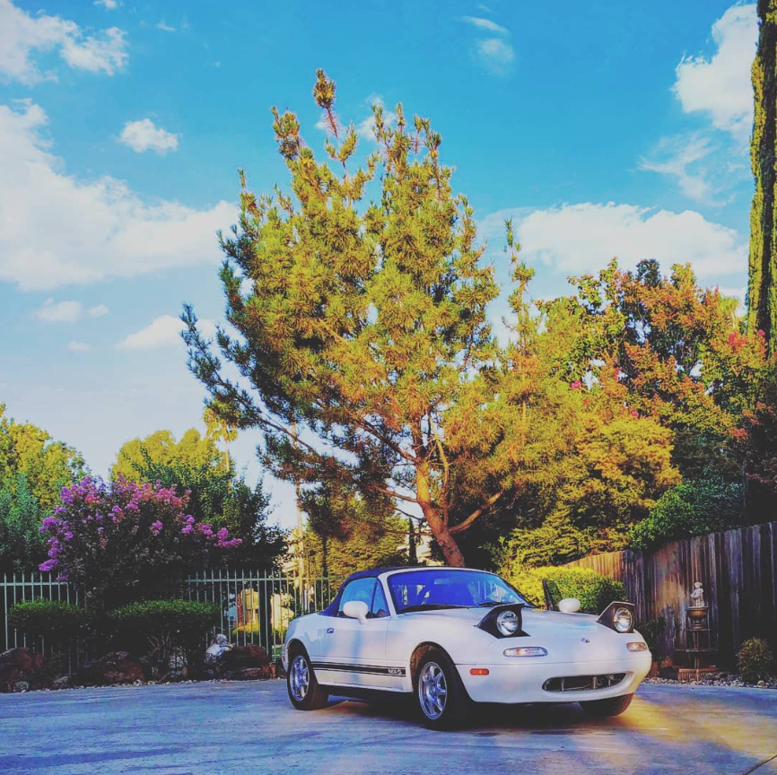
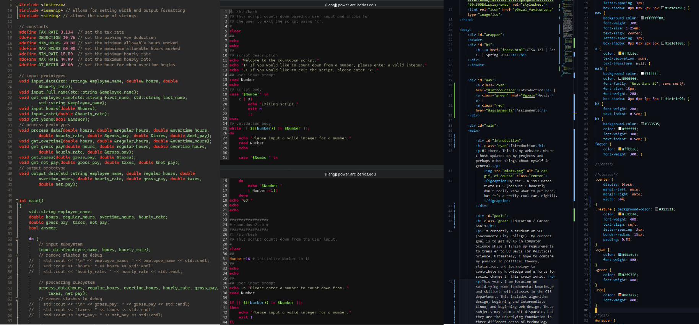

Introduction
Hi there. This is my website, where I host updates on my projects and perhaps other things about myself in general.
Education / Career Goals
I'm currently a student at SCC (Sacramento City College). My current goal is to get my AS in Computer Science while I finish up requirements to transfer to UC Davis for Political Science. Ultimately, I hope to combine my passion in political theory, statistics, and technology to contribute my knowledge and efforts for social change in this crazy world.
This year, I am focusing on solidifying some fundamental knowledge and skillsets with classes in the CIS department. This includes algorithm design, beginning and intermediate Linux, and beginning web design. These subjects may seem a bit disparate, but they are the underlying foundation in three different areas of technology that I want to explore in greater depth in the future, that is - software engineering, operating systems, and making web-accessible content. So it's not totally random or anything.
I've been learning a lot so far, so I have much too look forward to in the future! Some topics that I am especially excited to explore is using graphical libraries with C++, computational physics, more advanced automation with scripting, and using frameworks and plugins for web development projects.
Aside from the technology-adjacent side of things, I am continuing to sharpen my mind with political essays by Hannah Arendt and John Rawls. Since my concentration is in International Relations, it's also important that I also keep my bilingual skills and foreign awareness shap as well!
Assignments
I'm enrolled in CISW327, and taking the opportunity to work on this website as a project while showcasing the assignments I've worked on throughout the semester. Below are links to the assignments!
| Case Study #1 - Java Jam Coffee House | ch2 | ch3 | ch4 |
|---|---|
| Case Study #2 - Path of Light Yoga | ch2 | ch3 | ch4 |
| Case Study #3 - Java Jam Coffee House (cont.) | ch6 | ch7 |
| Case Study #4 - Java Jam Coffee House (cont.) | ch8 | ch9 | ch11 | ch12 |